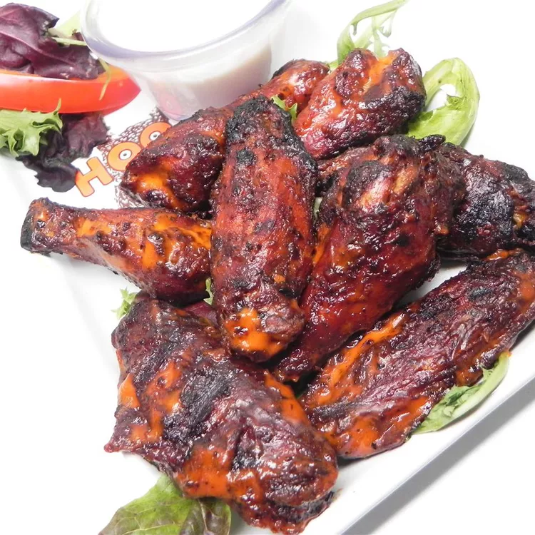

Hot Wings

These hotwings are pretty much almost impossible to eat.
I like making these painful hotwings in the air fryer. they give them a restaurant style crispiness to
the skin without having to use breading. the seasonings are to keep the pepper cravings at bay.
In fact, i usually don't want anything spicy for multiple days after these wings.
Ingredients
- huge bag of chicken wings
- cayenne pepper
- chili powder
- mustard powder
- scorpion pepper mash
- salt
- carrot juice
- a bottle of milk (to kill the pain after/pour down your backside)
Directions
- put on some gloves (everything will be really spicy!)
- pour some carrot juice and a tbsp of each seasoning into a bowl and stir
- place 3 tbsp of the scorpion pepper mash in the mixture
- cook the wings in the air fryer for 20 minutes
- Flip the wings
- cook for another 12 minutes
- take out the wings and baste them with the mixture
- say goodbye to your colon